Et virksomhetsnummer er en unik ni-sifret identifikator som tildeles alle virksomheter og organisasjoner som skal drives aktivt i Norge. Dette nummeret fungerer som virksomhetens “personnummer” og er grunnlaget for all offentlig registrering, regnskapsføring, skatteinnbetaling og kommunikasjon med offentlige myndigheter. Virksomhetsnummeret er obligatorisk for alle juridiske personer som skal operere i det norske markedet, og det spiller en kritisk rolle i bedriftens daglige drift og forretningsaktiviteter.
Seksjon 1: Hva er et Virksomhetsnummer?
Virksomhetsnummeret er definert som et unikt identifikasjonsnummer som tildeles av Brønnøysundregistrene til alle virksomheter og organisasjoner som registreres i Norge. Dette nummeret består av ni siffer og følger et spesifikt format som sikrer unikhet på tvers av alle registrerte enheter.
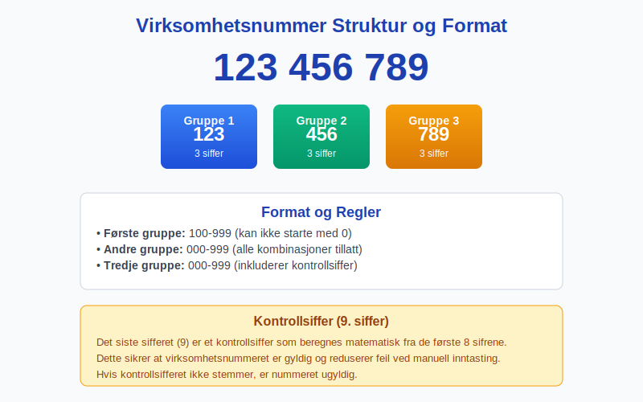
Struktur og Format
Virksomhetsnummeret består av ni siffer organisert i tre grupper:
- Første gruppe: 3 siffer (100-999)
- Andre gruppe: 3 siffer (000-999)
- Tredje gruppe: 3 siffer (000-999)
Eksempel: 123 456 789
Kontrollsiffer-algoritme
Det niende sifferet fungerer som et kontrollsiffer som beregnes ved hjelp av en spesiell algoritme. Dette kontrollsifferet sikrer at nummeret er gyldig og reduserer risikoen for feilregistrering ved manuell inntasting.
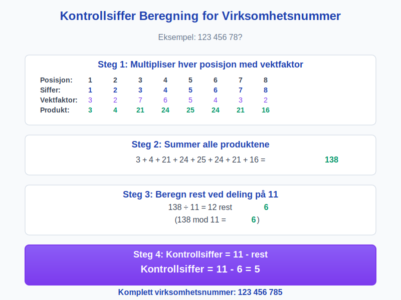
Seksjon 2: Registrering og Tildeling
Alle virksomheter som skal drive økonomisk aktivitet i Norge må registrere seg i Enhetsregisteret hos Brønnøysundregistrene. Dette gjelder både norske og utenlandske virksomheter som etablerer datterselskap eller filial i Norge.
Hvem Må Registrere Seg?
| Virksomhetstype | Registreringsplikt | Beskrivelse |
|---|---|---|
| Aksjeselskap (AS) | Obligatorisk | Må registreres før oppstart |
| Ansvarlig selskap (ANS) | Obligatorisk | Registrering ved etablering |
| Kommandittselskap (KS) | Obligatorisk | Må registreres i Foretaksregisteret |
| Enkeltpersonforetak | Frivillig/Obligatorisk | Avhenger av omsetning og aktivitet |
| Stiftelser | Obligatorisk | Registrering ved etablering |
| Foreninger | Frivillig | Kun hvis ønsket |
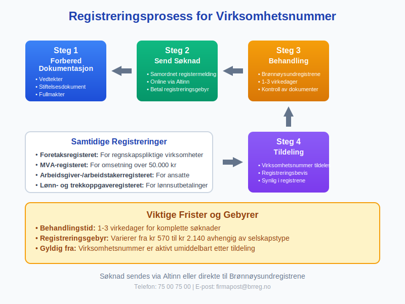
Registreringsprosessen
- Samordnet registermelding: De fleste virksomheter bruker en samordnet registermelding som samtidig registrerer virksomheten i flere registre
- Dokumentasjon: Vedlegg av nødvendige dokumenter som vedtekter, stiftelsesdokument eller fullmakter
- Betaling av gebyr: Registreringsgebyr som varierer avhengig av virksomhetstype
- Behandlingstid: Normalt 1-3 virkedager for komplette søknader
Seksjon 3: Virksomhetsnummer i Regnskapssammenheng
Virksomhetsnummeret er fundamentalt for all regnskapsmessig aktivitet og må brukes konsekvent i alle forretningsdokumenter og transaksjoner.
Obligatorisk Bruk i Regnskapsdokumenter
Virksomhetsnummeret må fremgå tydelig på alle følgende dokumenter:
- Fakturaer: Obligatorisk påkrav iht. bokføringsforskriften
- Tilbud: Må inneholde virksomhetsnummer for identifikasjon
- Kontrakter: Juridisk identifikasjon av kontraktspartene
- Årsregnskap: Obligatorisk i alle offentlige regnskaper
- MVA-oppgaver: Nødvendig for merverdiavgift håndtering
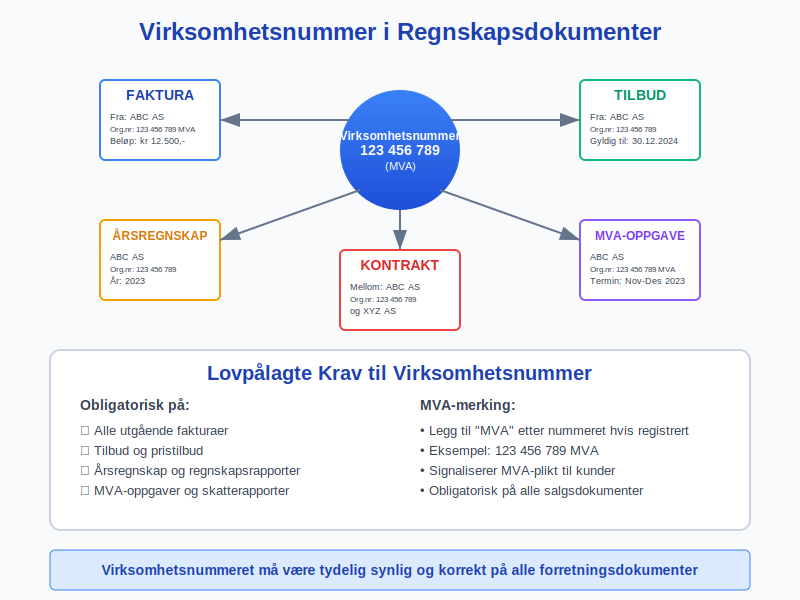
MVA-registrering og Virksomhetsnummer
For virksomheter som er MVA-registrert, skal teksten “MVA” stå etter virksomhetsnummeret på alle fakturaer og andre salgsdokumenter. Dette signaliserer at virksomheten er registrert for merverdiavgift og kan kreve inn MVA fra sine kunder.
Eksempel:
- Med MVA: 123 456 789 MVA
- Uten MVA: 123 456 789
Seksjon 4: Organisasjonsnummer vs. Virksomhetsnummer
Det er viktig å forstå forskjellen mellom organisasjonsnummer og virksomhetsnummer, da disse termene ofte brukes om hverandre selv om de teknisk sett kan være forskjellige.
Definisjon og Sammenheng
| Term | Definisjon | Bruksområde |
|---|---|---|
| Organisasjonsnummer | Hovedidentifikator for den juridiske enheten | Juridiske dokumenter, skatt, hovedregistrering |
| Virksomhetsnummer | Identifikator for spesifikk virksomhetsaktivitet | Daglig drift, fakturering, MVA-oppgaver |
For de fleste små og mellomstore bedrifter er organisasjonsnummer og virksomhetsnummer identiske. Forskjellen oppstår hovedsakelig for store konserner som kan ha:
- Ett organisasjonsnummer for morselskapet
- Flere virksomhetsnummer for ulike forretningsområder eller lokasjoner

Praktisk Bruk
I daglig forretningsdrift brukes virksomhetsnummeret for:
- Kunderegistrering i kundekartotek
- Leverandørregistrering i innkjøpssystemer
- Banktransaksjoner og betalingsreferanser
- Offentlige innrapporteringer som skatt og MVA
Seksjon 5: Virksomhetsnummer i Forskjellige Forretningsprosesser
Virksomhetsnummeret integreres i praktisk talt alle forretningsprosesser og er spesielt kritisk i følgende områder:
Faktureringsprosesser
Ved utstedelse av fakturaer må virksomhetsnummeret inkluderes for å oppfylle bokføringsforskriftens krav. Dette gjelder både for tradisjonelle papirfakturaer og moderne elektronisk fakturering.
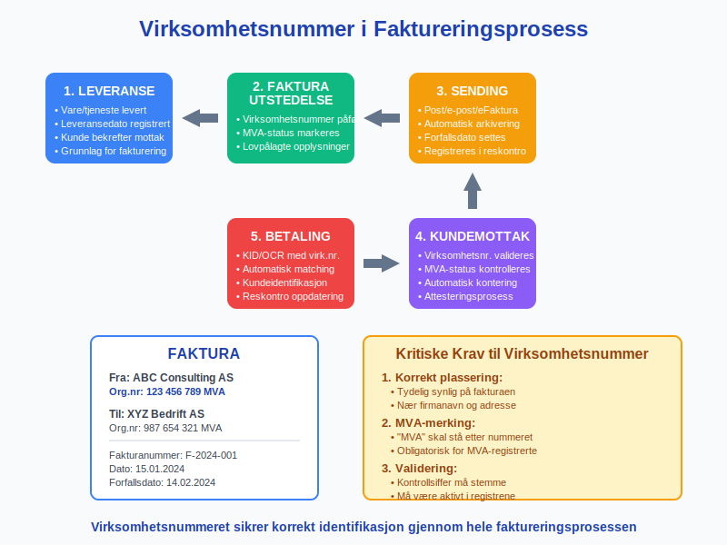
Leverandørbetalinger
Ved leverandørbetalinger brukes virksomhetsnummeret for å identifisere riktig mottaker og sikre korrekt kontering i regnskapet. Dette er spesielt viktig for automatiserte betalingssystemer.
Banktransaksjoner
Banker bruker virksomhetsnummeret for å:
- Identifisere kontoinnehavere ved bedriftstransaksjoner
- Validere betalingsmottakere
- Rapportere til finansmyndighetene i henhold til hvitvaskingsregelverket
Seksjon 6: Offentlige Registre og Informasjon
Virksomhetsnummeret gir tilgang til omfattende offentlig informasjon om virksomheten gjennom ulike registre administrert av Brønnøysundregistrene.
Enhetsregisteret
Enhetsregisteret inneholder grunnleggende informasjon om alle registrerte virksomheter:
- Virksomhetsnavn og eventuelle tidligere navn
- Organisasjonsform og organisasjonsform
- Registreringsadresse og postadresse
- Etablerings- og eventuelle opphørsdatoer
- Næringskoder (NACE-koder) som beskriver virksomhetens aktivitet
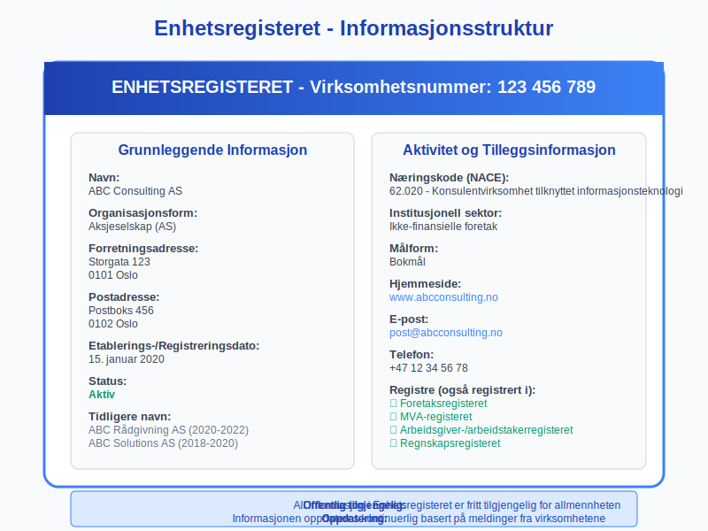
Foretaksregisteret
For registreringspliktire virksomheter inneholder Foretaksregisteret utvidet informasjon:
- Daglig leder og styresammensetning
- Aksjekapital og eierforhold
- Fullmaktsforhold og underskriftsrett
- Vedtekter og andre grunnlagsdokumenter
Regnskapsregisteret
Regnskapsregisteret inneholder årsregnskap og revisorer for regnskapspliktire virksomheter, tilgjengelig for offentlig innsyn.
Seksjon 7: Digitale Tjenester og Integrasjon
I dagens digitale forretningsverden er virksomhetsnummeret grunnlaget for en rekke automatiserte prosesser og integrasjoner.
API-integrasjoner
Virksomhetsnummeret brukes som primærnøkkel i:
- Regnskapsystemer for automatisering av fakturabehandling
- CRM-systemer for kundehåndtering og oppfølging
- ERP-systemer for fullstendig forretningsintegrasjon
- Offentlige API-er for validering og oppdatering av virksomhetsinformasjon
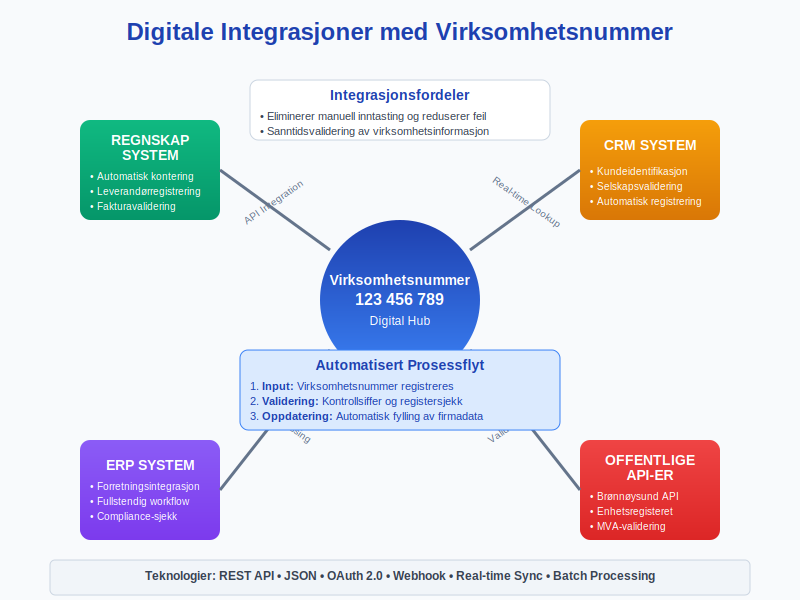
Validering og Verifikasjon
Moderne systemer bruker virksomhetsnummeret for sanntidsvalidering:
- Kontrollsiffer-sjekk sikrer at nummeret er matematisk korrekt
- Register-oppslag bekrefter at virksomheten eksisterer og er aktiv
- MVA-status verifiseres for korrekt fakturabehandling
- Kredittvurdering basert på offentlig tilgjengelig regnskapsinformasjon
Automatisert Fakturabehandling
Ved bruk av fakturatolk-teknologi gjenkjennes virksomhetsnummeret automatisk og brukes til:
- Leverandøridentifikasjon i systemet
- Automatisk kontering basert på historiske transaksjoner
- Duplettsjekk for å unngå dobbeltregistrering
- Compliance-sjekk mot interne retningslinjer
Seksjon 8: Internasjonalt Perspektiv
Selv om virksomhetsnummeret er spesifikt for Norge, finnes tilsvarende systemer i andre land for identifikasjon av virksomheter.
Tilsvarende Systemer Internasjonalt
| Land/Region | Identifikator | Beskrivelse |
|---|---|---|
| Danmark | CVR-nummer | Central Virksomhedsregister |
| Sverige | Organisationsnummer | 10-sifret nummer |
| Finland | Y-tunnus | Yritys- ja yhteisötunnus |
| EU | VAT-nummer | Merverdiavgiftsnummer |
| USA | EIN/FEIN | Federal Tax ID |
| Storbritannia | Company Number | Registrert hos Companies House |
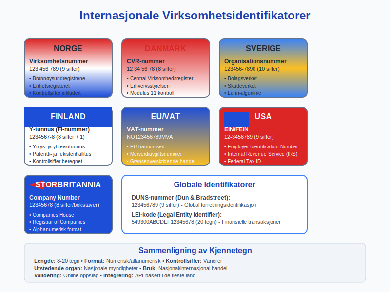
Grenseoverskridende Handel
Ved internasjonal handel brukes virksomhetsnummeret sammen med andre identifikatorer:
- EORI-nummer for tollhåndtering i EU
- DUNS-nummer for global forretningsidentifikasjon
- LEI-kode for finansielle transaksjoner
Seksjon 9: Endringer og Oppdateringer
Virksomhetsinformasjon kan endres over tid, og det er viktig å holde informasjonen oppdatert i de relevante registrene.
Hvilke Endringer Krever Melding?
Obligatoriske meldinger til Brønnøysundregistrene:
- Navneendring: Må meldes innen 1 måned
- Adresseendring: Oppdatering av forretnings- eller postadresse
- Aktivitetsendring: Nye eller endrede næringskoder
- Organisasjonsendring: Endring av selskapsform eller struktur
- Daglig leder: Skifte av daglig leder eller prokurister
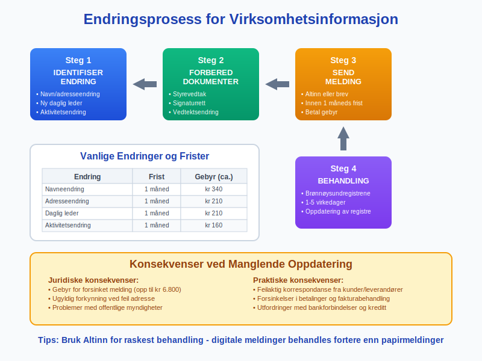
Konsekvenser av Manglende Oppdatering
Juridiske konsekvenser:
- Gebyr for forsinket melding
- Ugyldig forkynning ved feil adresse
- Problemer med offentlige myndigheter
Praktiske konsekvenser:
- Feilaktig korrespondanse fra kunder og leverandører
- Forsinkelser i betalinger og fakturabehandling
- Utfordringer med bankforbindelser og kredittillatelser
Seksjon 10: Sikkerhet og Misbruk
Virksomhetsnummeret er offentlig informasjon, men det er viktig å være oppmerksom på potensielt misbruk.
Beskyttelse mot Misbruk
Anbefalte sikkerhetstiltak:
- Overvåk bruken av virksomhetsnummeret i offentlige registre
- Varsle ved mistanke om uautorisert bruk
- Implementer tofaktorautentisering i digitale systemer
- Regelmessig kontroller offentlige registre for endringer
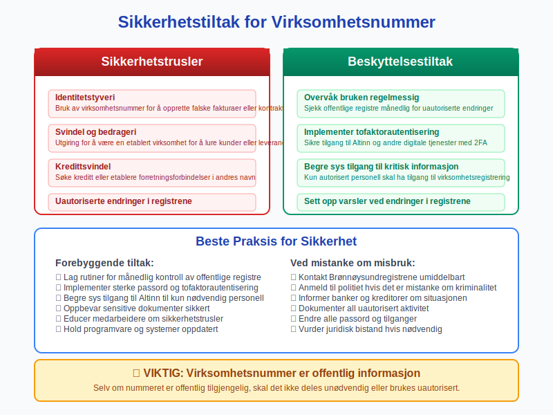
Vanlige Misbruksformer
- Identitetstyveri: Bruk av virksomhetsnummer for å opprette falske fakturaer
- Svindel: Utgiring for å være en etablert virksomhet
- Kredittsvindel: Søke kreditt i andres navn
Seksjon 11: Fremtidige Utviklinger
Digitalisering og teknologisk utvikling påvirker hvordan virksomhetsnummer brukes og administreres.
Planlagte Forbedringer
Teknologiske innovasjoner:
- Blockchain-basert verifikasjon for økt sikkerhet
- API-første tilnærming for bedre integrasjon
- Kunstig intelligens for automatisk oppdatering av virksomhetsinformasjon
- Mobile løsninger for enklere administrasjon
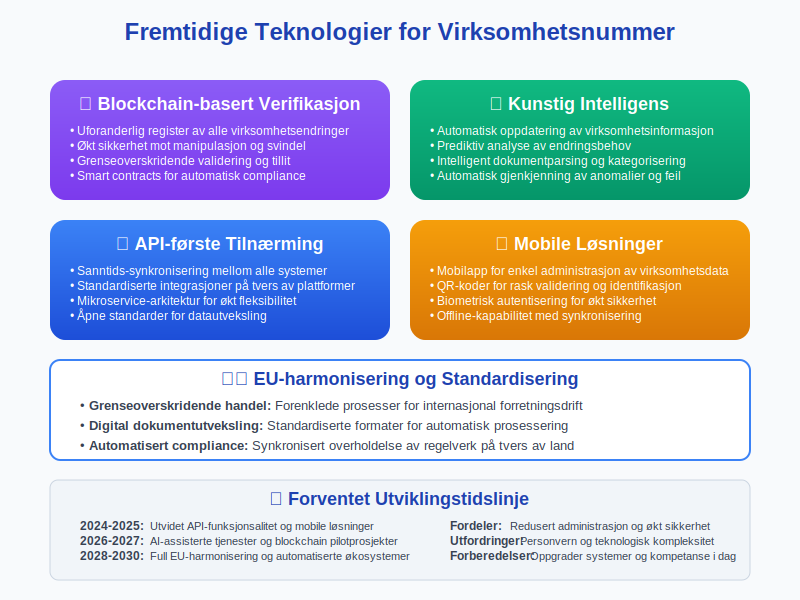
EU-standardisering
Norge arbeider med EU-harmonisering av virksomhetsidentifikatorer for å lette:
- Grenseoverskridende handel
- Digital dokumentutveksling
- Automatisert compliance-sjekking
- Effektiv tollhåndtering
Seksjon 12: Praktiske Tips og Beste Praksis
For å maksimere nytten av virksomhetsnummeret og unngå vanlige fallgruver, er her noen praktiske anbefalinger:
Daglig Bruk
Rutiner for korrekt bruk:
- Kontroller alltid virksomhetsnummer ved nye leverandører
- Lagre viktige virksomhetsnummer i kundekartotek
- Inkluder virksomhetsnummer i alle forretningsdokumenter
- Verifiser MVA-status ved større transaksjoner
Systemintegrasjon
Tekniske anbefalinger:
- Implementer automatisk validering av virksomhetsnummer
- Integrer med Brønnøysundregistrenes API-er for sanntidsoppdateringer
- Opprett backup-rutiner for kritisk virksomhetsinformasjon
- Etabler overvåkning av endringer i leverandør- og kundedatabaser
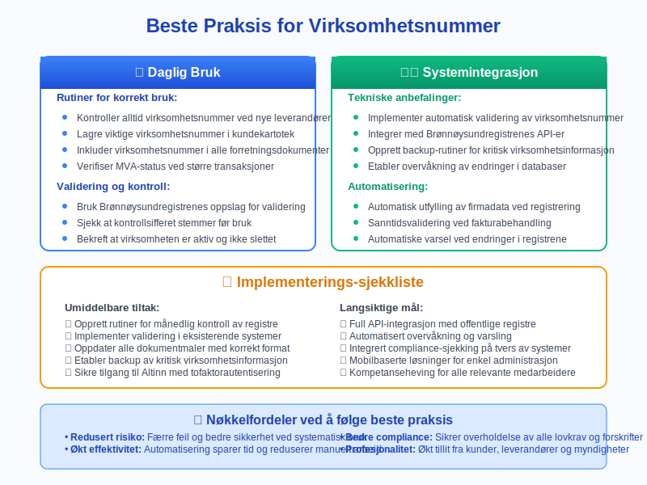
Virksomhetsnummeret er fundamentet for all forretningsaktivitet i Norge og spiller en kritisk rolle i moderne regnskapsføring og virksomhetsdrift. Ved å forstå dets rolle, krav og best practices, kan virksomheter sikre korrekt compliance, effektiv drift og robust risikostyring. Korrekt bruk av virksomhetsnummeret legger grunnlaget for pålitelige forretningsrelasjoner og smidig integrasjon med Norges digitale forretningsinfrastruktur.